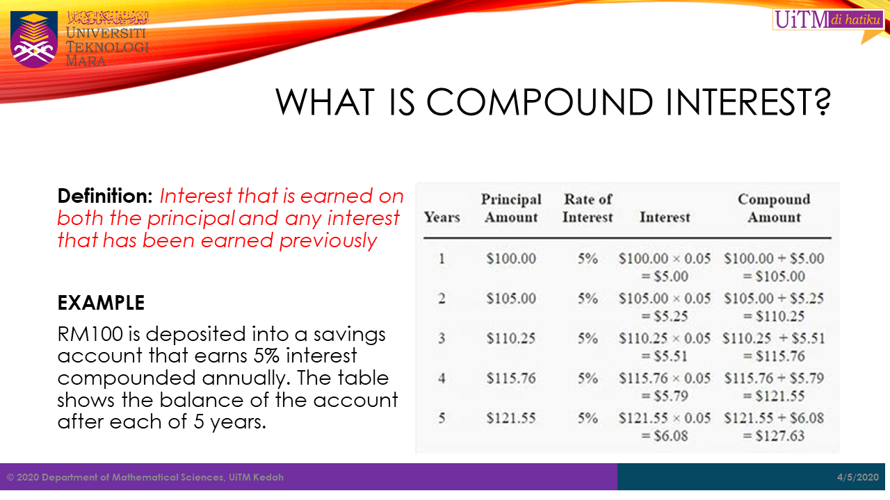
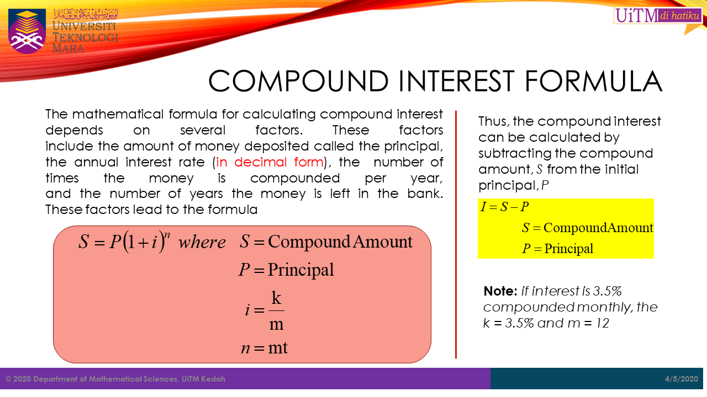
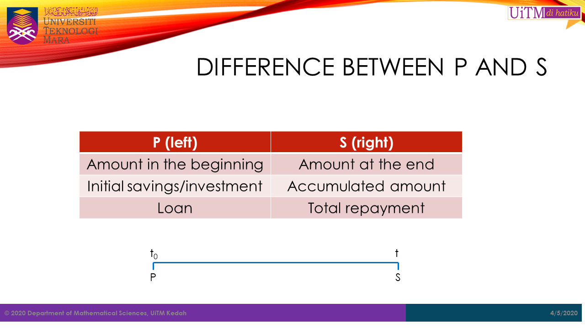
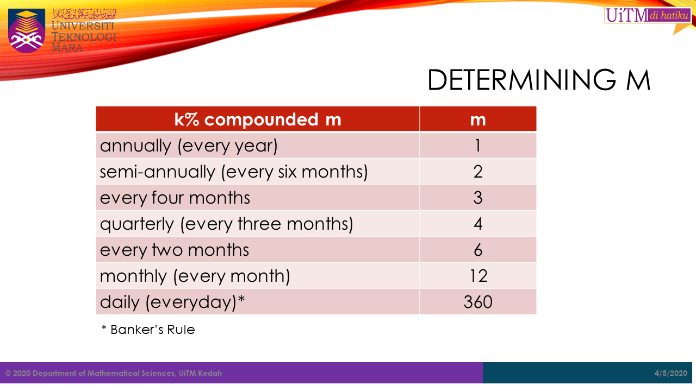
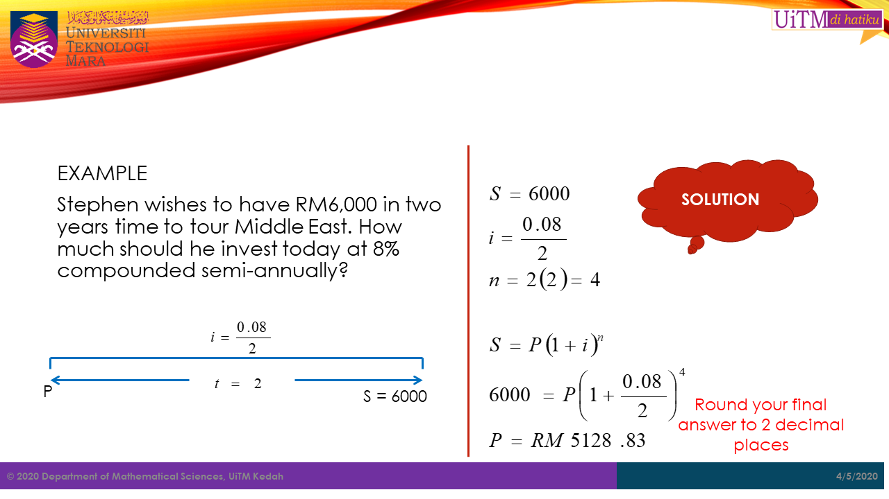
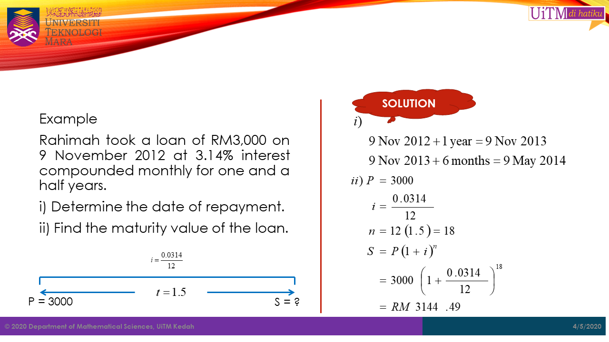
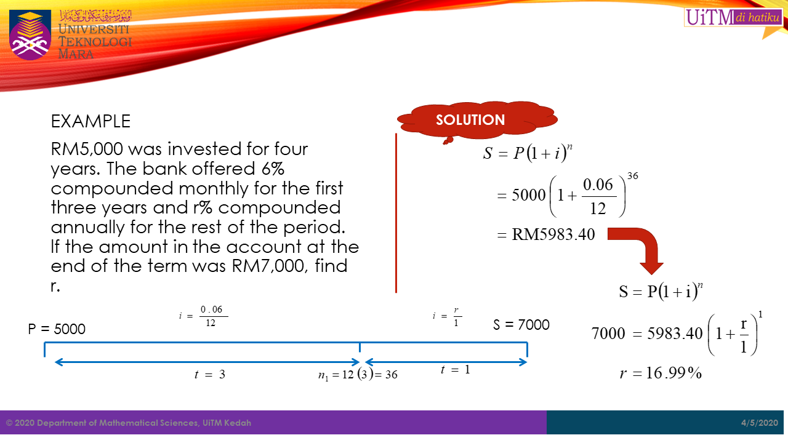
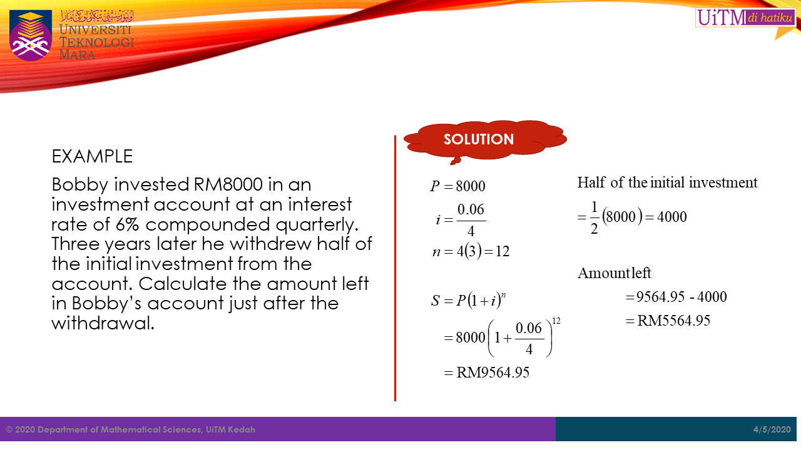
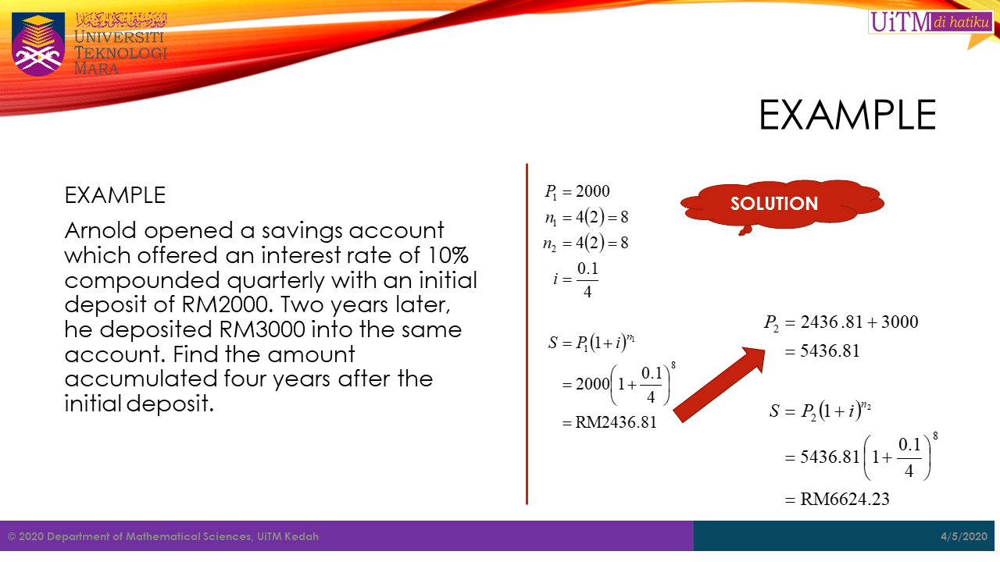
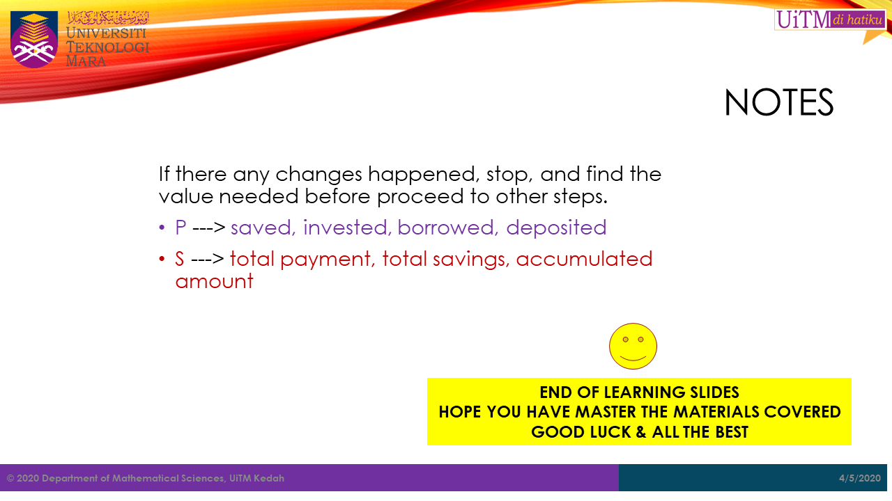

         
In this chapter students will be introduced on the concepts of time value of money. In addition, students will learn how use the compound amount formula to find the future value, compound interest, and present value of investments and loans.
The time value of money (TVM) is the concept that money you have now is worth more than the identical sum in the future due to its potential earning capacity. This core principle of finance holds that provided money can earn interest, any amount of money is worth more the sooner it is received. TVM is also sometimes referred to as present discounted value.
The time value of money draws from the idea that rational investors prefer to receive money today rather than the same amount of money in the future because of money’s potential to grow in value over a given period of time. For example, money deposited into a savings account earns a certain interest rate and is therefore said to be compounding in value (Chan, 2020).
Key Takeaways
Time value of money is based on the idea that people would rather have money today than in the future.
Given that money can earn compound interest, it is more valuable in the present rather than the future.
The formula for computing time value of money considers the payment now, the future value, the interest rate, and the time frame.
The number of compounding periods during each time frame is an important determinant in the time value of money formula as well.
In compound interest, interest is earned on both the principal and any interest that has been earned previously. In this situation each time the interest is calculated, it is based on the new principal value that include the previous amount of interest. Thus, the interest is calculated on the current value of principal at the time of calculation.
The process is illustrated in the table shown below.
This is a bit different from simple interest as illustrated in the image shown below.
The mathematical formula for calculating compound interest depends on several factors These factors include the amount of money deposited called the principal (\(P\)), the annual interest rate \(k\) (in decimal form), the numberof times the money is compounded per year (\(m\)), and the number of years (\(t\)) the money is left in the bank These factors lead to the formula,
\[
\begin {aligned}
S\ &=\ P(1+i)^n \\
\\
where,\ S\ &=\ Compound\ Amount \\
P\ &=\ Initial\ Principal \\
i\ &=\ \frac{k}{m} \\
n\ &=\ mt
\end {aligned}
\]
Thus, the compound interest can be calculated by subtracting the compound amount, S from the initial principal, P.
\[ \begin {aligned} I\ = S\ -\ P \end {aligned} \]
Given the interest of \(k\%\) compounded \(m\), the value of \(m\) is shown in the table below:
| \(k\%\) compounded \(m\) | m |
|---|---|
| annualy (every year) | 1 |
| semi-annualy (every six months) | 2 |
| every four months | 3 |
| quarterly (every three months) | 4 |
| every two months | 6 |
| monthly (every month) | 12 |
| weekly (every weeks) | 52 |
| daily (every day)* | 360 |
Note: *Banker’s Rule
Example if interest is \(3.5\%\) compounded monthly, the \(k = 3.5\%\) and \(m = 12\).
The following formula can be used to find the present value of a compound amount. In genearal, the present value is simply the intial principal of investment or loan.
\[ P\ =\ \frac{S}{(1+i)^n}\ = S(1+i)^{-n} \]
Important Keywords
\(P\) —> saved, invested, borrowed, deposited
\(S\) —> total payment, total savings, accumulated amount
8 years ago, RMX was invested at a bank that offered an interest rate of 8% compounded semi-annually. If the balance in the account today is RM5,618.95,
If Farahin invested RM2000 and after t years, she got RM6250 with interest 5.5% compounded every six months. How long was the investment? [21 years]
RM20,000 is invested in an investment fund that pays 6% compounded annually for 10 years.
Abu invested RM30,000 in a trust fund at 7% compounded semi-annually. He invests another RM30,000 in a mutual fund at 7% simple interest.
First Bank offers an interest of 7.5% compounded semi-annually while AZ Bank offers an interest of 7% compounded monthly.
Amirul deposited RM1,000 in a savings account at 3% compounded monthly. Find the number of months required if he wanted the amount in the account to become RM2,000. [277.6 months]
Find the nominal rate compounded every two months which is equivalent to 10% compounded semi-annually. [k =9.84%]
A sum of money, RM Z was deposited in a savings account with interest 8% compounded quarterly. After one year, RM2000 was withdrawn. Three years after the withdrawal, the balance was RM 12865.29. Find the value of Z. [RM11219.35]
Wan Ahmad deposited RM14,000 into an account at an interest rate of 8% compounded monthly. Two years later he withdrew RM10,000 from the account. Find:
Find the future value and the interest earned if RM2,000 is invested for 3 years at 6% compounded monthly.(S = RM2393.36, I = RM393.36)
Haris invested RM4000 into an account that paid 8% compounded semi-annually. He intends to keep the account untouched for six years. However, after 4 years he is in need of money and had to withdraw RM 1,600 from the account.
Imran opened a savings account which offers an interest rate of 8% compounded quarterly with an initial deposit of RM2000. One and half years later, he deposited RM3000 into the same account. Find the amount accumulated two and a half years after the initial deposit.(RM5685.29)
Fasha borrowed RM3000 at 6% compounded semi-annually for four years. Find the amount of interest charged.(RM800.31)
RM600 is invested for 4 years 10 months. This investment is offered an interest rate of 9% compounded every three months for the first 2 years and 7% compounded monthly for the rest of the period. Calculate,
Abdullah can invest his money either in Fund A that gives 9% interest compounded quarterly or in Fund B that gives 9% simple interest per year. If Abdullah wishes to invest RM50,000 for one year, which fund do you suggest him to invest in? Show your calculation.(Fund A : S = RM54654.17, Fund B : S = RM54500, Fund A)
RM X was deposited in a savings account at 4.8% interest compounded monthly. 56 months later, RM4200 was withdrawn from the account and the balance was RM3903.32. Find the value of X.(RM6480)
5 years ago, Aswad invested RM5660 in a bank at a rate of 12% compounded monthly. Find:
A year ago Talib saved RM5000 in an account that pays interest 8.5% compounded semi-annually. Today, he saved another RM X into the same account. Find the value of X if he wants to accumulate RM10,000 one year from today. (RM3767.24)
Mariam can save her money either at 9% compounded quarterly in Bank P or at 8.5% compounded monthly in Bank Q.
Five years ago, Farez invested RM17000 into his account at k% compounded quarterly. Now the account balance has accumulated to RM 21262.76.
Chan, J. (2020). Time Value of Money (TVM). Retrieved from https://www.investopedia.com/terms/t/timevalueofmoney.asp on March 8, 2020.
Text and figures are licensed under Creative Commons Attribution CC BY 4.0. The figures that have been reused from other sources don't fall under this license and can be recognized by a note in their caption: "Figure from ...".